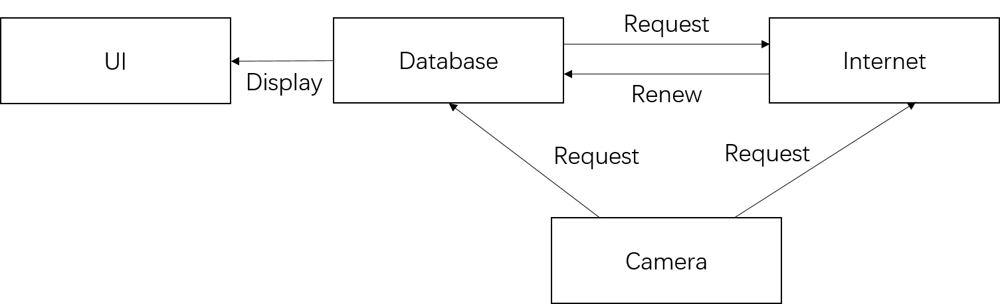
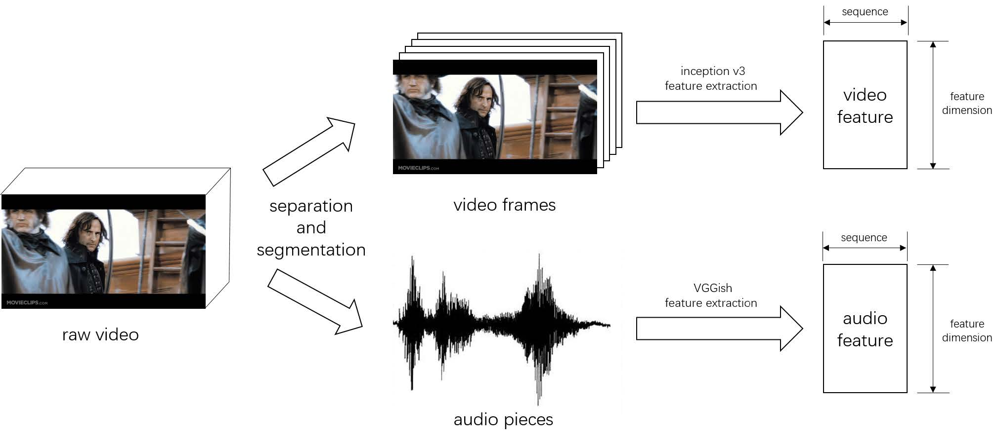
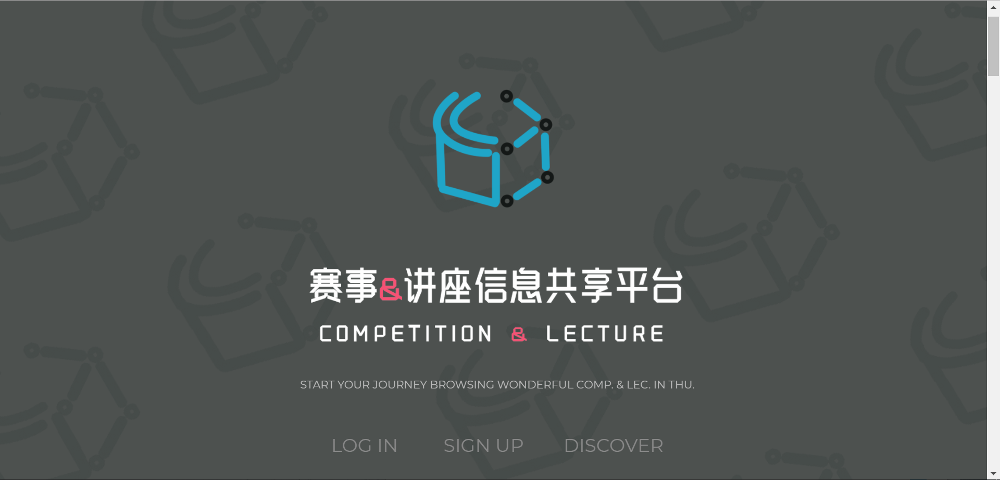

|
I am a senior undergraduate student in Electronic Engineering at Tsinghua University. I was working in Institute of Information Cognition & Intelligent System since 2017, under the supervision of Prof. Jiansheng Chen. I'm working in i-Vision Group, under the supervision of Prof. Jiwen Lu. My research interests lies at computer vision and deep learning. |

|
|
|
|
|
|
|  |
Online Big Data Face Recognition System [Code]
Real time face recognition with data from Internet
Big data management policy for renewing database Predicting relationship between the people in the image |
|  |
Visual-audio Similarity Evaluation System [Code]
Evaluating similarity between given audio and visual fragments
Model for sequence feature extraction and similarity factor evaluation |
|  |
Competition & Lecture Management System [Code]
Lecture management system with wechat and website version
Organizing information according to user's habit and need |
Website source from Jon Barron and Xingyuan Sun. |